ViralScope AI / video4
ViralScope AI
TikTok / tools / Greenworks 80V Trimmer breakdown — for homeowners: what's worth copying first, then where conversion stalls.
Key Frames
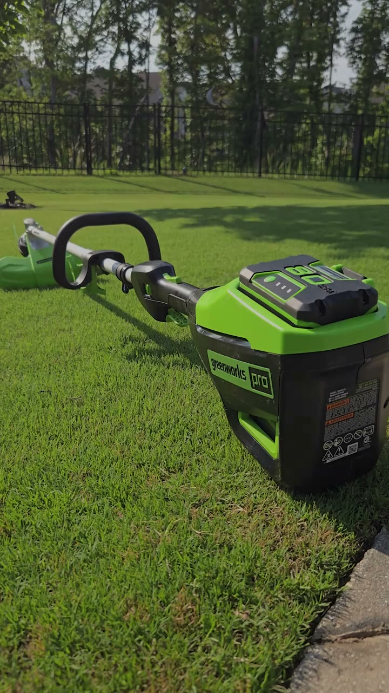
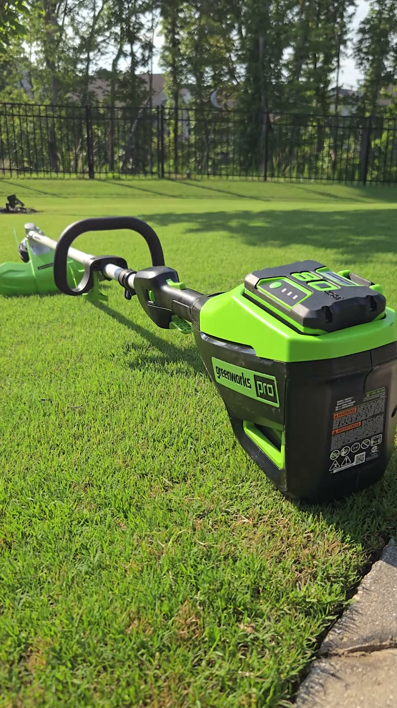
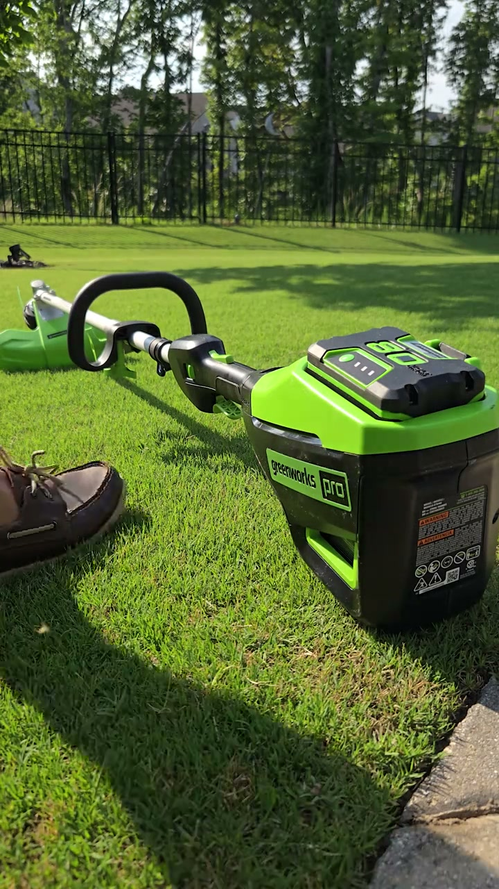
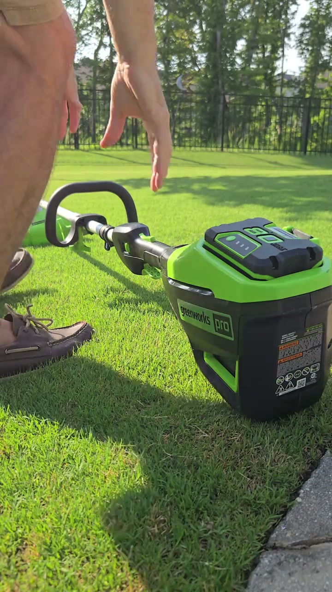
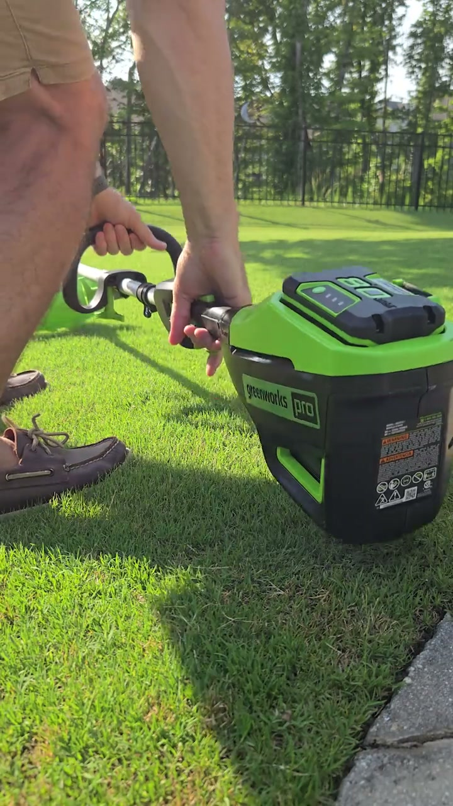
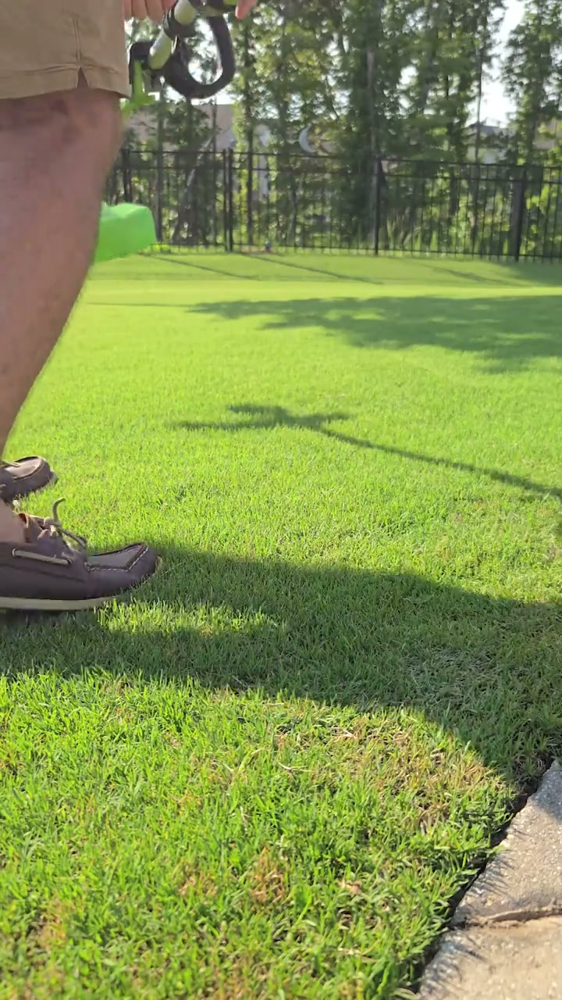
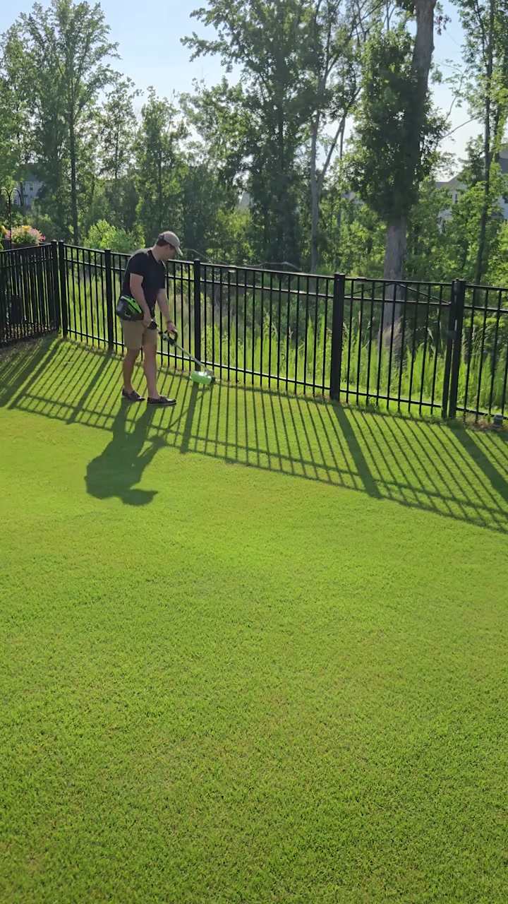
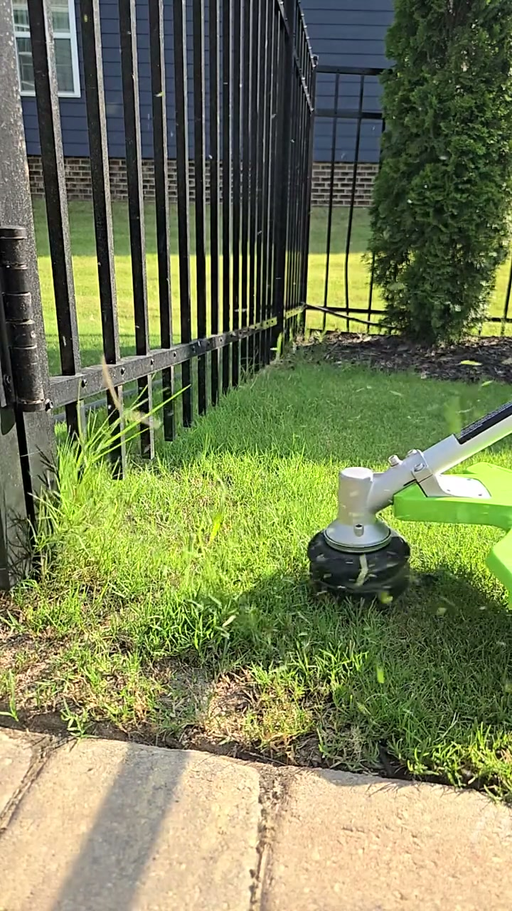
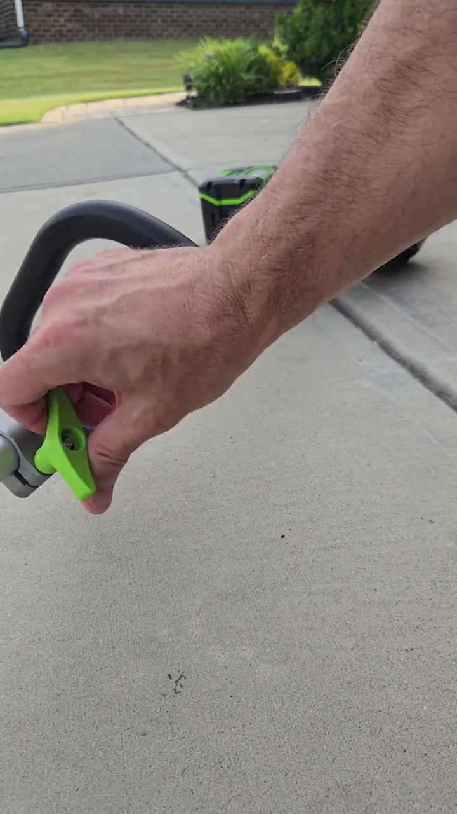
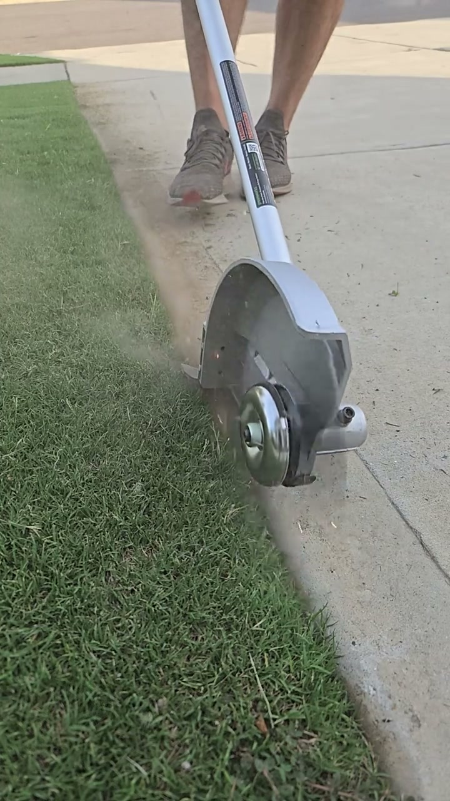
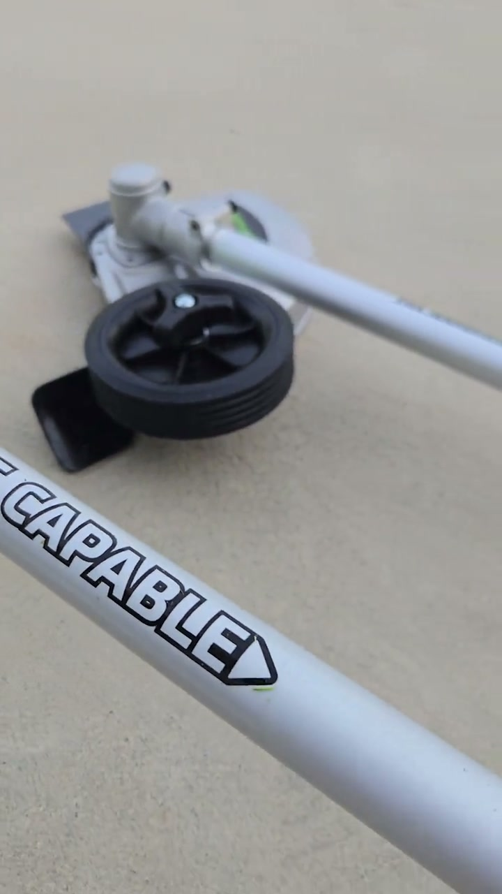
✅ What's Working — Repeatable
Repeatable Viral Formula
Reusable template structure:
- Open on the mess or the payoff
Example: show overgrown fence grass getting cut, or show the final crisp edge first.
- State the practical homeowner win in one sentence
Example: “This battery trimmer cleaned my whole fence line without gas or cords.”
- Show one clear use case in tight close-up
Example: trimming weeds at the fence base.
- Add the second use case that increases product value
Example: flip to edger mode and clean the driveway edge.
- Drop one simple proof point
Example: runtime, lighter handling, less noise, easy reload.
- End on visible result plus direct CTA
Example: final clean edge, then “Link in bio for the current deal.”
This formula is repeatable because it is built on:
- visible yard problem
- satisfying tool action
- dual-function proof
- one practical battery benefit
- simple purchase instruction
Our Brand Version
Ready-to-shoot script / shot list:
Shot 1 (0.0s-1.0s): Tight close-up of the edger cutting a driveway line, debris kicking out.
Voiceover: “This is the cleanest edge I’ve gotten without touching a gas tool.”
Shot 2 (1.0s-2.5s): Quick cut to overgrown grass by fence before trimming.
On-screen text: “Fence line was getting out of control.”
Shot 3 (2.5s-5.0s): Close-up of trimmer clearing weeds at the fence base.
Voiceover: “The 80V trimmer has enough power to clear thick spots fast.”
Shot 4 (5.0s-7.0s): Medium shot of creator walking the yard with the tool.
Voiceover: “No cord, no gas smell, and way less noise.”
Shot 5 (7.0s-9.0s): Show switch into edging mode with a close-up of the handle/attachment area.
Voiceover: “Then I switched over and cleaned up the driveway edge.”
Shot 6 (9.0s-12.0s): Close-up edging pass with crisp line reveal.
On-screen text: “Trimmer + edger in one”
Shot 7 (12.0s-14.0s): Finished lawn edge and fence line result shot.
Voiceover: “If you want pro-looking lines without gas maintenance, this is the setup.”
Shot 8 (14.0s-16.0s): Product on lawn, battery visible, creator points to bio.
Voiceover: “Link in bio for the current Greenworks offer.”
⚠️ What to Fix
Conversion Diagnosis · Priority Actions
- Rework the creative from the first frame because the current opening is too weak to earn distribution: remove the black frame, start with the most satisfying trimming or edging result, and lead with a homeowner outcome instead of the product name.
- Rebuild the sales logic so the viewer understands why this specific tool is worth buying: add one concrete decision-driving reason such as battery vs. gas convenience, runtime, noise reduction, or ease of use, and pair it with visible proof in the footage.
- Tighten creator qualification for future iterations based on whether they can sell, not just whether they match the niche: this creator appears category-relevant, so one remake is justified, but if the next version still cannot improve hook strength, trust signals, and CTA clarity, the partnership should not be scaled.
Creator Feedback
You’re a good fit for the tools category, and the strongest parts of this video are the real yard-use footage and the natural way you talk about the product. The issue is less about your presence and more about how the video is built for TikTok and for conversion. The best moments are when the tool is actively cutting and when the result is visually satisfying, so those need to come first. In the next version, open immediately on the strongest edging or trimming shot, show a messier before-state, and frame the first line around the homeowner result instead of the model name. Then add one clear reason this tool beats the alternative, like no gas smell, less noise, or easier upkeep, and close with a specific reason to click instead of a generic link-in-bio CTA. One remake makes sense here, but it needs to be treated as a conversion-focused rebuild, not a light edit.